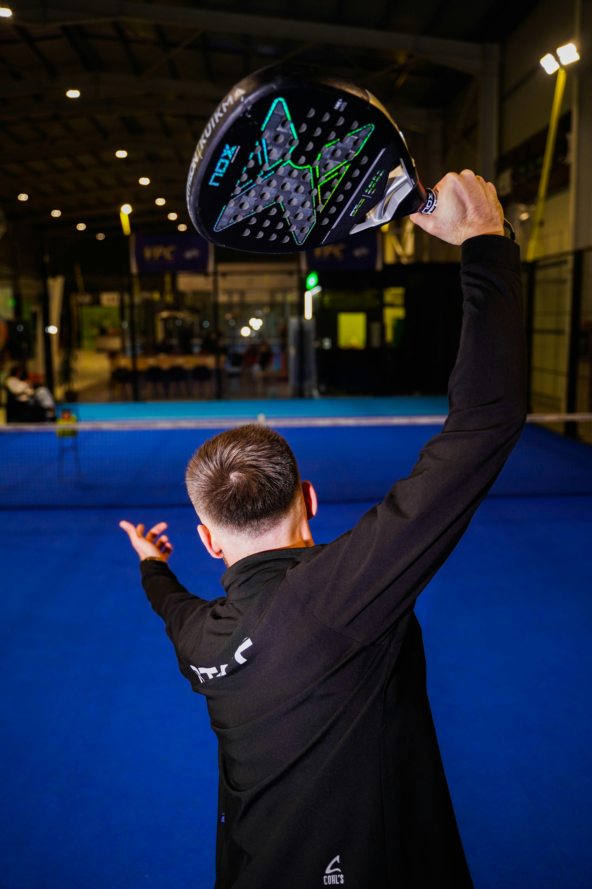
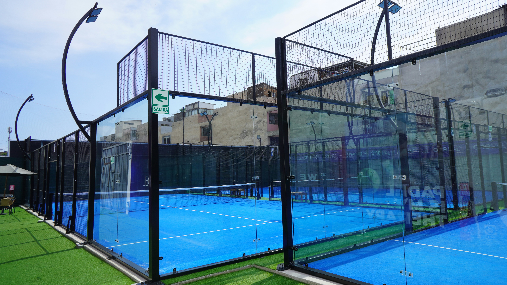
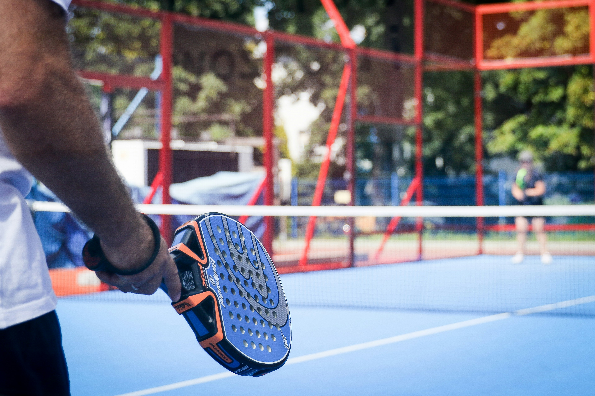

Why Padel Could Grow Here
Ireland has a strong sporting culture, active communities, and increasing interest in social ways to stay fit. Padel offers a fun and modern option that could appeal to students, families, tennis players, and complete beginners.
Opportunities for Growth
Dublin
Dublin has a large population and a strong sports community, making it an ideal location for more courts and clubs.
Cork
Cork offers space for community-based sport and could help grow padel through local clubs and schools.
Galway
Galway’s active lifestyle culture makes it a strong candidate for future padel development and promotion.
Padel in Action



Want to Play Outdoor? Here is Today's Padel Weather
Select a city to check current playing conditions and decide if it is a good time to get on court.
Weather information will appear here.